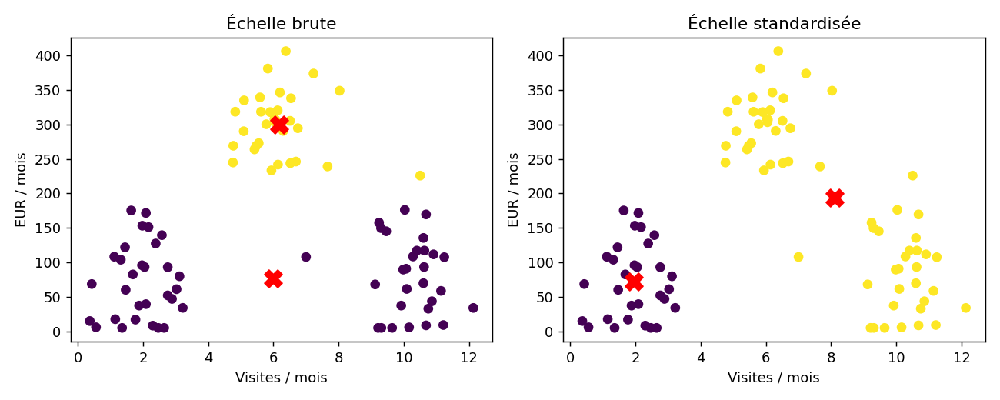

Ting Tan · EEEA · Oct 2026
Exécution de référence mesurée · données pédagogiques fictives
{
"customers": 90,
"clusters": 2,
"mean": [
6.059555555555554,
153.2433333333333
],
"scale_population_sd": [
3.4601293845786594,
117.72476764800932
],
"comparison": "Compare inertia within a fixed feature space."
}| cluster | visits_month | spend_eur_month | count |
|---|---|---|---|
| 0 | 6.0 | 76.23 | 59 |
| 1 | 6.17 | 299.81 | 31 |
| cluster | visits_month | spend_eur_month | count |
|---|---|---|---|
| 0 | 1.96 | 72.53 | 30 |
| 1 | 8.11 | 193.6 | 60 |
| space | k | inertia_in_this_space | silhouette_in_this_space |
|---|---|---|---|
| raw | 2 | 232510.444 | 0.7115 |
| standardized | 2 | 95.604 | 0.5007 |

{'python': '3.8.20', 'numpy': '1.24.4', 'sklearn': '1.3.2', 'matplotlib': '3.7.4'}